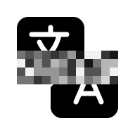

简洁。美观。轻松易用。
清爽的界面，从第一次点击就能自然上手。少花时间查找菜单，多花时间观看。

Babel Player01 / 字幕已隐藏
将鼠标悬停在
切换字幕遮罩上。
点击或轻触显示字幕。
02 / 字幕已显示
同一时刻。点击一次，改变关注的内容。试试高亮按钮。
清爽的界面，从第一次点击就能自然上手。少花时间查找菜单，多花时间观看。
下载包小于 30 MB。可播放 MP4、MKV、AVI、MOV 和 WebM 文件。
每项功能都服务于语言学习。隐藏字幕，仔细聆听，在需要时显示文字。
视频编码：H.264、HEVC（H.265）、VP9、AV1。
音频编码：AAC。
支持的编码可能因操作系统而异。